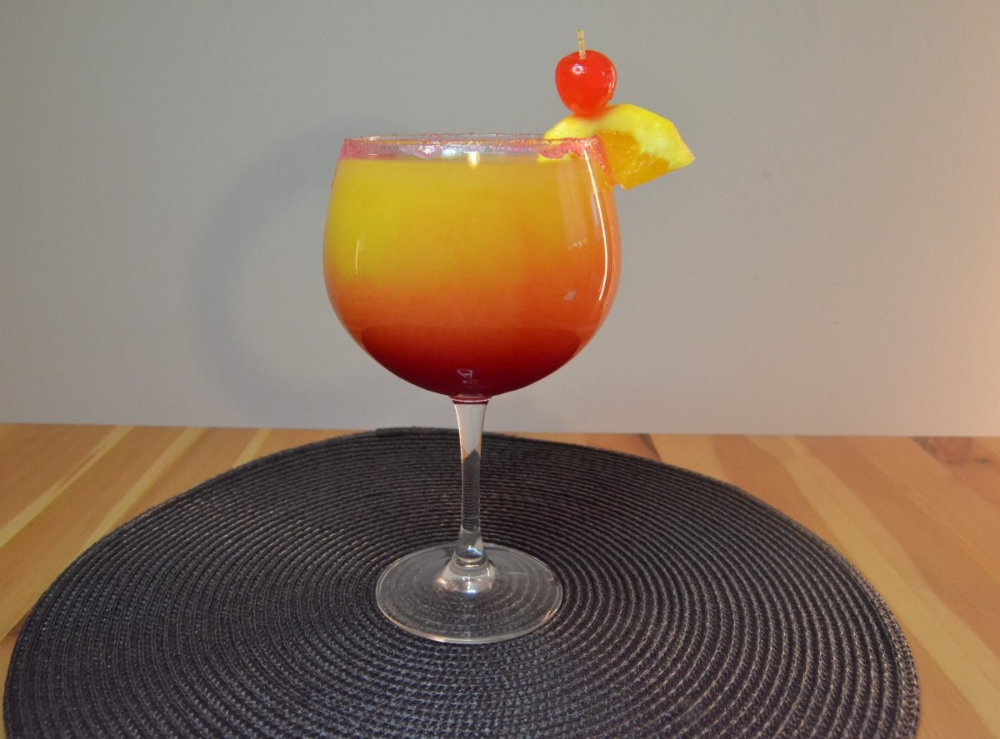
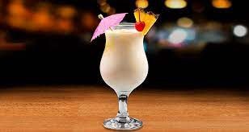
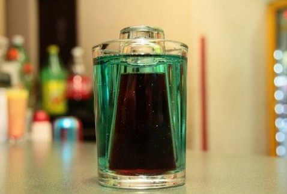
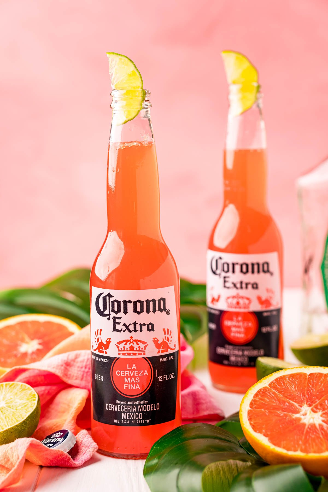

| COCTELES |
INGREDIENTES |
REPRESENTACION |
| San Francisco |
Versión clásica sin alcohol
- 40 ml de zumo de naranja
- 30 ml de zumo de limón
- 40 ml de zumo de piña
- 30 ml de granadina
- 4 hielos picados
Para adornar
- Una cucharada de azúcar
Versión con alcohol
- Añadir 30 ml de vodka por persona
|
 |
| Piña Colada |
Versión clásica sin alcohol
- 60 ml. de leche o agua de coco
- 100 ml de zumo de piña
- Hielo normal o si no tenemos vaso batidor hielo picado o hielo pilé
Para adornar
- Unos trozos de piña natural
Versión con alcohol
- 100 ml de ron
|
 |
| Perla Negra |
Versión unica con alcohol
- 2 oz. de licor alemán "Jagermeifter (Jager)"
- 1 lata de Boost
|
 |
| Cerveza Sunrise |
Versión unica con alcohol
- 1 Cerveza
- 2 oz de Tequila
- 2 oz de jugo de naranja
- 2 oz de granadina
Para adornar
- Una rebanada de limon
|
 |
| Margarita |
Versión unica con alcohol
- 60 ml de tequila blanco o reposado
- 40 ml. de triple seco o de licor de naranja
- 60 ml zumo de lima
- Hielo
- Copa de boca ancha para cóctel Margarita
Para adornar
- Sal y sirope de azúcar (para adornar la copa en su superficie)
|
 |
| Mojito |
Versión unica con alcohol
- 2 cucharaditas de azúcar blanco
- 8 hojas de hierbabuena (2 ramitas de menta)
- 30 ml de zumo de lima
- 1/2 lima en rodajas o cuartos
- 120 ml. de Soda (Agua con gas con sifón
- Hielo picado o pilé
Versión con alcohol
- 60 ml. de ron cubano (hemos empleado Havana Club Añejo 3 Años)
|
 |